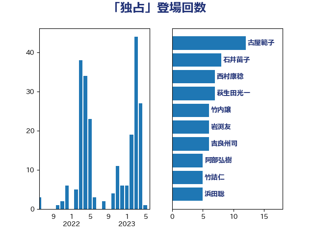

単語「独占」

| 古屋範子 | 公明党 | 12 回 |
| 石井苗子 | 日本維新の会 | 8 回 |
| 西村康稔 | 自由民主党 | 7 回 |
| 萩生田光一 | 自由民主党 | 7 回 |
| 竹内譲 | 公明党 | 6 回 |
| 岩渕友 | 日本共産党 | 6 回 |
| 吉良州司 | 無所属 | 6 回 |
| 阿部弘樹 | 日本維新の会 | 5 回 |
| 竹詰仁 | 国民民主党 | 5 回 |
| 浜田聡 | NHK党 | 5 回 |
| 山口俊一 | 自由民主党 | 5 回 |
| 吉川元 | 立憲民主党 | 5 回 |
| 一谷勇一郎 | 日本維新の会 | 5 回 |
| 笠井亮 | 日本共産党 | 4 回 |
| 福島伸享 | 無所属 | 4 回 |
| 青柳仁士 | 日本維新の会 | 3 回 |
| 羽田次郎 | 立憲民主党 | 3 回 |
| 嘉田由紀子 | 無所属 | 3 回 |
| 高野光二郎 | 自由民主党 | 2 回 |
| 高木かおり | 日本維新の会 | 2 回 |
| 青柳陽一郎 | 立憲民主党 | 2 回 |
| 里見隆治 | 公明党 | 2 回 |
| 角田秀穂 | 公明党 | 2 回 |
| 稲津久 | 公明党 | 2 回 |
| 神谷裕 | 立憲民主党 | 2 回 |
| 清水貴之 | 日本維新の会 | 2 回 |
| 徳永エリ | 立憲民主党 | 2 回 |
| 岸田文雄 | 自由民主党 | 2 回 |
| 小林鷹之 | 自由民主党 | 2 回 |
| 大島敦 | 立憲民主党 | 2 回 |
| 前川清成 | 日本維新の会 | 2 回 |
| 伊藤孝恵 | 国民民主党 | 2 回 |
| 中司宏 | 日本維新の会 | 2 回 |
| 高木毅 | 自由民主党 | 1 回 |
| 馬淵澄夫 | 立憲民主党 | 1 回 |
| 須藤元気 | 無所属 | 1 回 |
| 阿達雅志 | 自由民主党 | 1 回 |
| 鈴木義弘 | 国民民主党 | 1 回 |
| 鈴木敦 | 国民民主党 | 1 回 |
| 足立康史 | 日本維新の会 | 1 回 |
| 赤嶺政賢 | 日本共産党 | 1 回 |
| 西岡秀子 | 国民民主党 | 1 回 |
| 藤井比早之 | 自由民主党 | 1 回 |
| 落合貴之 | 立憲民主党 | 1 回 |
| 美延映夫 | 日本維新の会 | 1 回 |
| 篠原豪 | 立憲民主党 | 1 回 |
| 福岡資麿 | 自由民主党 | 1 回 |
| 神津たけし | 立憲民主党 | 1 回 |
| 石川大我 | 立憲民主党 | 1 回 |
| 田村智子 | 日本共産党 | 1 回 |
| 田村まみ | 国民民主党 | 1 回 |
| 田名部匡代 | 立憲民主党 | 1 回 |
| 玉木雄一郎 | 国民民主党 | 1 回 |
| 猪瀬直樹 | 日本維新の会 | 1 回 |
| 熊谷裕人 | 立憲民主党 | 1 回 |
| 漆間譲司 | 日本維新の会 | 1 回 |
| 浅田均 | 日本維新の会 | 1 回 |
| 沢田良 | 日本維新の会 | 1 回 |
| 池畑浩太朗 | 日本維新の会 | 1 回 |
| 江島潔 | 自由民主党 | 1 回 |
| 櫻井周 | 立憲民主党 | 1 回 |
| 横山信一 | 公明党 | 1 回 |
| 杉久武 | 公明党 | 1 回 |
| 末松義規 | 立憲民主党 | 1 回 |
| 木村英子 | れいわ新選組 | 1 回 |
| 岡田克也 | 立憲民主党 | 1 回 |
| 山添拓 | 日本共産党 | 1 回 |
| 小沢雅仁 | 立憲民主党 | 1 回 |
| 小森卓郎 | 自由民主党 | 1 回 |
| 小倉將信 | 自由民主党 | 1 回 |
| 塩崎彰久 | 自由民主党 | 1 回 |
| 勝部賢志 | 立憲民主党 | 1 回 |
| 加藤勝信 | 自由民主党 | 1 回 |
| 住吉寛紀 | 日本維新の会 | 1 回 |
| 伊東良孝 | 自由民主党 | 1 回 |
| 伊佐進一 | 公明党 | 1 回 |
| 中野洋昌 | 公明党 | 1 回 |
| 中谷一馬 | 立憲民主党 | 1 回 |
| 中川正春 | 立憲民主党 | 1 回 |